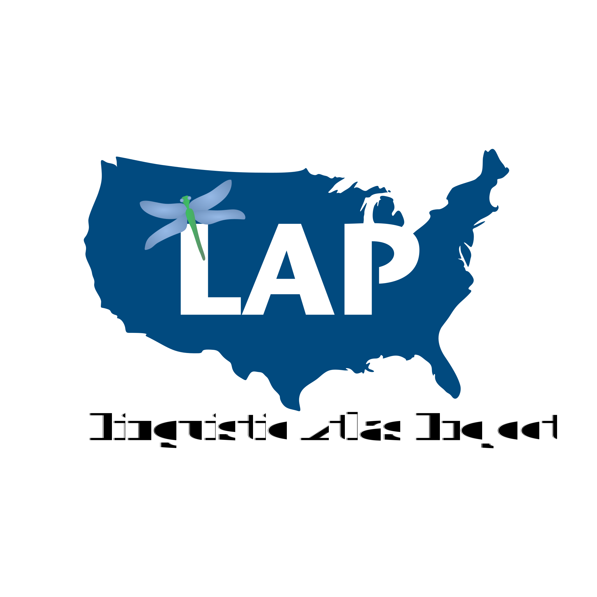
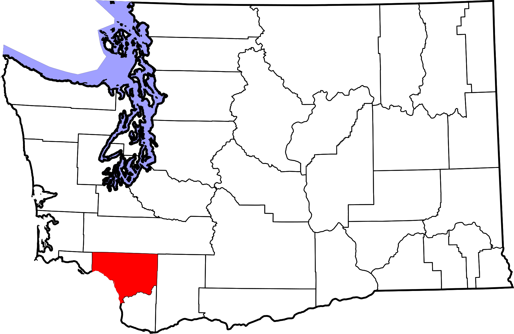
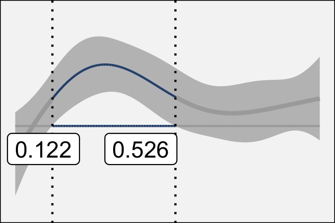
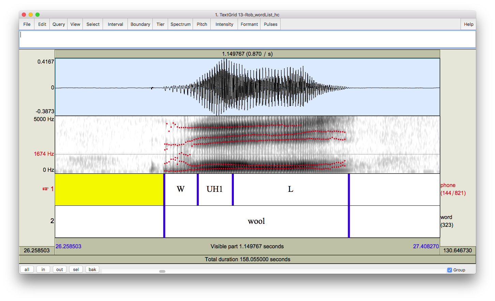

Research
This page highlights some of my research, organized thematically. I am a dialectologist, so several of my research interests are on specific regions. But intersecting these regions is where the sociolinguist in me comes out, and I try to uncover the meaning in linguistic variants—particularly the infrequent ones. And I go about these questions in these areas as a phonetician, analyzing speech production data and vowel trajectories. Finally, in nearly every study, I put on my quantitative linguist/data scientist/statistician cap when I actually do the analysis and interpretation. I think it’s a great intersection of subdisciplines within linguistics and I’m kept on my toes trying to keep up with each field.
Utah English
My current research focus is on language in Utah. One focus is simply on documenting what linguistic features can be found. There is a more traditional Utah accent that people are aware of. I’d like to document that as best I can before its speakers die out. But then there is a newer, contemporary Utah accent that few people are commenting on. Besides that, there is a lot to be said about people’s perceptions about Utah English, especially when religion is added to the mix. I haven’t published much on Utah English yet, but I expect it to be a central part of my research agenda for a while.
CV Highlights
Joseph A. Stanley. “Utahns sound Utahn when they avoid sounding Utahn.” The 97th Annual Meeting of the Linguistic Society of America. Denver, CO. January 6. 2023.
Joseph A. Stanley & Lisa Morgan Johnson. “Vowels can merge because of changes in trajectory: Prelaterals in rural Utah English.” The 96th Annual Meeting of the Linguistic Society of America. Washington, D.C. January 6–9, 2022.
Joseph A. Stanley (2019). “(thr)-Flapping in American English: Social factors and articulatory motivations.” Proceedings of the 5th Annual Linguistics Conference at UGA, 49–63.
Joseph A. Stanley & Kyle Vanderniet (2018). “Consonantal Variation in Utah English.” Proceedings of the 4th Annual Linguistics Conference at UGA, 50–65.
“Mormonese”
Mormons, more properly referred to as members of the Church of Jesus Christ of Latter-day Saints, were once distinct enough to be considered an ethnic group. Today, their behavior, dress, and culture are much more mainstream, but their speech patterns might not always be. I’m curious about how Mormons talk, particularly in relation to non-Mormons and ex-Mormons. I’d also like to disentangle Mormonese from Utah English, because while they must overlap, I think they’re different in subtle ways. Working at Brigham Young University will certainly give me better access to this population and I hope to soon uncover some new findings on Mormonese.
CV Highlights
Joshua Stevenson, Joseph A. Stanley, & Wendy Baker-Smemoe. “The Missionary Voice: Perceptions of an Emerging Register.” Linguistic Society of America Annual Meeting. New York City. January 4, 2024.
Joseph A. Stanley (2020). “The Absence of a Religiolect among Latter-day Saints in Southwest Washington.” In Valerie Fridland, Alicia Wassink, Lauren Hall-Lew, & Tyler Kendall (eds.) Speech in the Western States Volume III: Understudied Dialects. (Publication of the American Dialect Society 105), 95–122. Durham, NC: Duke University Press. https://doi.org/10.1215/00031283-8820642.
Stanley, Joseph A. (2016). “When do Mormons Call Each Other by First Name?” University of Pennsylvania Working Papers in Linguistics, 22(1).
Methods in Sociophonetic Data Analysis
I’ve become increasingly becoming preoccupied with how sociophoneticians process their data. Sometimes when I’m in the throes of data analysis, I realize that something about the analysis itself is worth exploring. I end up getting side-tracked, notice something important that I need to tell the field about, and then never get back to what it was I was originally writing about! I quite enjoy these projects but I hope I can get back to doing more sociolinguistic research.
CV Highlights
Joseph A. Stanley & Betsy Sneller. 2023. Sample size matters in calculating Pillai scores. Journal of the Acoustical Society of America 153(1). 54–67. https://doi.org/10.1121/10.0016757.
Joseph A. Stanley (2022). “Interpreting the Order of Operations in Sociophonetic Analysis.” Linguistics Vanguard 8(1). 279–289. https://doi.org/10.1515/lingvan-2022-0065.
Joseph A. Stanley (2022) “Order of Operations in Sociophonetic Analysis,” University of Pennsylvania Working Papers in Linguistics: Vol. 28: Iss. 2, Article 17. Available at: https://repository.upenn.edu/pwpl/vol28/iss2/17.
The South
Having firmly established myself as a researcher of Western American English, I was reluctant to start doing research on the South since the amount of existing literature is vast. But, as a research assistant for the Linguistic Atlas Project for four years, I couldn’t help but begin analysis on DASS, a newly transcribed corpus of interviews from the 1970s and 1980s. Together with Peggy Renwick and the others at the Linguistic Atlas team, we’ve dug deep into the phonetics of how southerners, and more specifically Georgians, sounded a couple generations ago. You can see and interact with some of this data by going a site I made called the Gazetteer of Southern Vowels.

CV Highlights
Margaret E. L. Renwick, Joseph A. Stanley, Jon Forrest, & Lelia Glass (2023). “Boomer Peak or Gen X Cliff? from SVS to LBMS in Georgia English.” Language Variation and Change. https://doi.org/10.1017/S095439452300011X.
Joseph A. Stanley (2022). “A comparison of turn-of-the-century and turn-of-the-millennium speech in Georgia.” Proceedings of the 6th Annual Linguistics Conference at UGA. Linguistics Society at UGA, Athens, GA.
Joseph A. Stanley, Margaret E. L. Renwick, Katie Ireland Kuiper, & Rachel Miller Olsen (2021). “Back vowel dynamics and distinctions in Southern American English.” Journal of English Linguistics 49(4): 389–418. https://doi.org/10.1177/00754242211043163.
Margaret E. L. Renwick & Joseph A. Stanley (2020). “Modeling dynamic trajectories of tense vs. lax vowels in the American South.” Journal of the Acoustical Society of America 147(1): 579–595. doi: 10.1121/10.0000549.
Rachel M. Olsen, Michael L. Olsen, Joseph A. Stanley, Margaret E. L. Renwick, & William A. Kretzschmar, Jr. (2017). “Methods for transcription and forced alignment of a legacy speech corpus.” Proceedings of Meetings on Acoustics 30, 060001; doi: http://dx.doi.org/10.1121/2.0000559.
Cowlitz County, Washington
My dissertation was on English in Cowlitz County, Washington, specifically on the front lax and low back vowels. I used that data to also write about prevelar raising and a few other things. While Washington is not my area of focus anymore, I still use the data for lots of side projects.

CV Highlights
Joseph A. Stanley. “Beyond Midpoints: Vowel Dynamics of the Low-Back-Merger Shift.” Poster presentation at the 181st Meeting of the Acoustical Society of America (ASA). Seattle, WA. November 29, 2021.
Joseph A. Stanley (2020). “The Absence of a Religiolect among Latter-day Saints in Southwest Washington.” In Valerie Fridland, Alicia Wassink, Lauren Hall-Lew, & Tyler Kendall (eds.) Speech in the Western States Volume III: Understudied Dialects. (Publication of the American Dialect Society 105), 95–122. Durham, NC: Duke University Press. https://doi.org/10.1215/00031283-8820642.
Joseph A. Stanley (2020). “Vowel Dynamics of the Elsewhere Shift: A Sociophonetic Analysis of English in Cowlitz County, Washington.” Ph.D Dissertation. University of Georgia, Athens, GA.
Joseph A. Stanley (2018). “Changes in the Timber Industry as a Catastrophic Event:
Vowel Formant Trajectories
Traditional sociophonetic research analyzes vowels using a pair of measurements, usually somewhere near the midpoint of the vowel. We can get a greater understanding of vowels by extracting data at multiple timepoints per vowel. In particular, I think there could be important sociolinguistic meaning encoded in formant trajectories. Much of my recent research has gone this route, and has used generalized additive mixed-effects models to analyze the resulting data. This type of analysis yields complex results and visualizations, but I think we’re starting to get a better idea of how vowels work while uncovering exciting new research questions and possibilities.

CV Highlights
Joseph A. Stanley & Lisa Morgan Johnson. “Vowels can merge because of changes in trajectory: Prelaterals in rural Utah English.” The 96th Annual Meeting of the Linguistic Society of America. Washington, D.C. January 6–9, 2022.
Joseph A. Stanley, Margaret E. L. Renwick, Katie Ireland Kuiper, & Rachel Miller Olsen (2021). “Back vowel dynamics and distinctions in Southern American English.” Journal of English Linguistics 49(4): 389–418. https://doi.org/10.1177/00754242211043163.
Joseph A. Stanley. “Beyond Midpoints: Vowel Dynamics of the Low-Back-Merger Shift.” Poster presentation at the 181st Meeting of the Acoustical Society of America (ASA). Seattle, WA. November 29, 2021.
Joseph A. Stanley (2020). “The Absence of a Religiolect among Latter-day Saints in Southwest Washington.” In Valerie Fridland, Alicia Wassink, Lauren Hall-Lew, & Tyler Kendall (eds.) Speech in the Western States Volume III: Understudied Dialects. (Publication of the American Dialect Society 105), 95–122. Durham, NC: Duke University Press. https://doi.org/10.1215/00031283-8820642.
Joseph A. Stanley (2020). “Vowel Dynamics of the Elsewhere Shift: A Sociophonetic Analysis of English in Cowlitz County, Washington.” Ph.D Dissertation. University of Georgia, Athens, GA.
Margaret E. L. Renwick & Joseph A. Stanley (2020). “Modeling dynamic trajectories of tense vs. lax vowels in the American South.” Journal of the Acoustical Society of America 147(1): 579–595. doi: 10.1121/10.0000549.
Infrequent Phonological Variables
I’m interested in phenomena on the margins of English phonology. There are some speech patterns that are quite infrequent because the particular sequence of sounds only exists in a handful of words. For example, I’ve found phonological and regional patterns in words with /ɛɡ/ (beg, leg). I’ve also found that people in Utah have a tap in /θɹ/ clusters (three, throw) but Washingtonians don’t. Utahns also insert stops in /ls/ clusters (false, salsa). How infrequent can a variable be and still exhibit language-internal, regional, and sociolinguistic variability? Turns out, I’m discovering, pretty infrequent!

CV Highlights
Joseph A. Stanley (2022). “Regional patterns in prevelar raising.” American Speech. 97(3): 374–411. 97(3): 374–411. http://doi.org/10.1215/00031283-9308384.
Joseph A. Stanley & Lisa Morgan Johnson. “Vowels can merge because of changes in trajectory: Prelaterals in rural Utah English.” The 96th Annual Meeting of the Linguistic Society of America. Washington, D.C. January 6–9, 2022.
Joseph A. Stanley. “Methodological considerations in the study of infrequent phonological variables: The case of English /eɡ/ and /ɛɡ/.” Word-specific phenomena in the realization of vowel categories: Methodological and theoretical perspectives (LabPhon 17 Satellite Workshop). Vancouver, British Columbia[Online]. September, 2020.
Joseph A. Stanley (2019). “Phonological Patterns in
Joseph A. Stanley (2019). “(thr)-Flapping in American English: Social factors and articulatory motivations.” Proceedings of the 5th Annual Linguistics Conference at UGA, 49–63.
Joseph A. Stanley & Kyle Vanderniet (2018). “Consonantal Variation in Utah English.” Proceedings of the 4th Annual Linguistics Conference at UGA, 50–65.